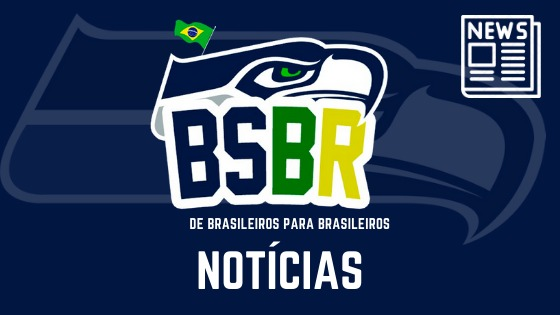

The Seattle Seahawks are a professional football franchise based in Seattle, Washington. The Seahawks compete in the National Football League (NFL) as a member of the NFC West. They joined the NFL in 1976 as an expansion team. Since 2002, they have played at home at Lumen Field

Plantão da Offseason 2021 V: Resumo do Trainning Camp
Vamos seguindo com as informações do camp! Plantão da Offseason I: Três novos nomes chegando em Seattle! Plantão da Offseason II: Gente nova para o Rookie Minicamp! Plantão da Offseason III: Sem Julio Jones, Seattle traz outro recebedor e novidades do dia 8 dos OTAs Plantão da Offseason IV: Jamal Adams vai jogar? Vamos la! […]